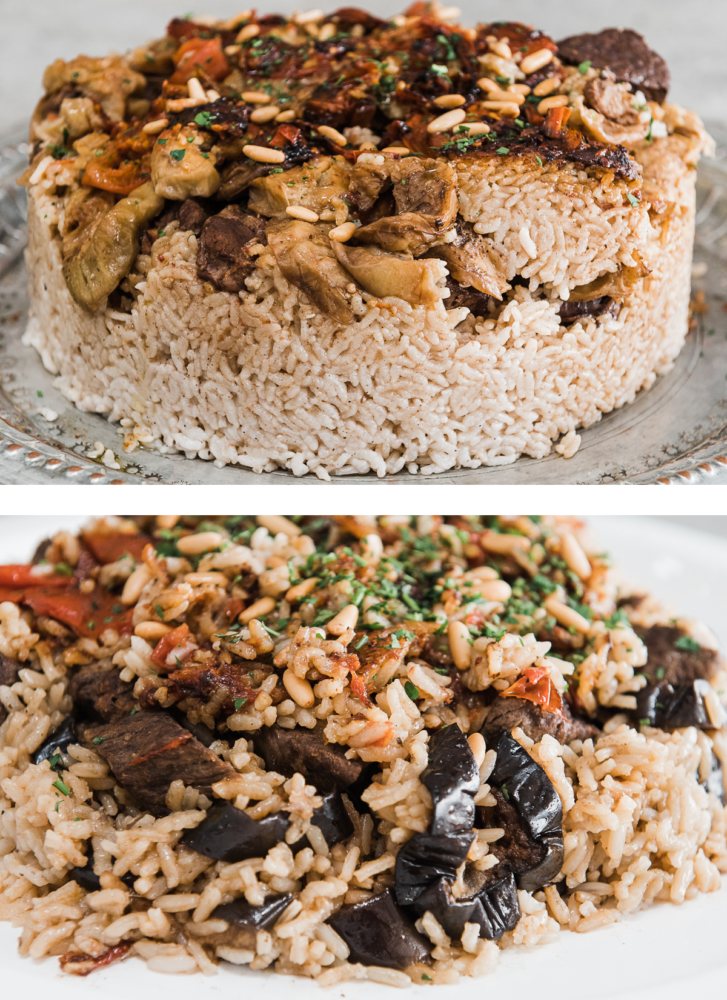

Makloubeh

Description
Maqluba (or maqlooba, makloubeh, maqlouba - however you want to spell it!) is a famous middle eastern rice, vegetable and meat dish that will impress any guest. The unique thing about this dish is how it is carefully layered, cooked, then flipped upside down to reveal the delicious vegetables and meat
Ingredients
- 1 onion
- 2 medium sized eggplants
- 1 cauliflower, cut into small florets
- 1kg of meat (chicken, lamb or beef works) diced or cut into pieces
- 2 cups of plain rice
- 4 cloves of garlic
- 2 tsp turmeric powder
- 1 tsp cumin
- 1 tsp Baharat (“7 spices”). Note: this can be obtained at most Middle Eastern grocers, but if not, you can make your own. The 7 spice blend is a mix of ground spices: black pepper, paprika, cumin, coriander, cloves, nutmeg, cinnamon, cardamom. Go easy on the cardamom if making your own – it’s quite strong!
- 2 bay leaves
- 1 cup fresh parsley, chopped
- 200ml vegetable oil
- salt & pepper to taste
- Optional: sliced almonds and pine nuts.
Directions
- Peel and cut up the eggplant into thick horizontal slices and marinate them in salt for 2 minutes. Wash the eggplant in water to get rid of the salt, and then drain the slices over paper towels.
- Soak 2 cups of rice in warm water with two pinches of salt and 2 teaspoons turmeric powder and leave for 30 minutes. (Note: After the 30 minutes, you will strain the rice to use for Part 2 below. If timing does not match up, please make sure you strain after 30 minutes).
- In a large saucepan, fry the cauliflower florets and eggplant slices in the vegetable oil until brown. Place the fried vegetables in a strainer lined with paper towels to drain off any excess oil. Note: If you prefer a healthier alternative, brush the florets and eggplant slices with olive oil and roast at 400F/200C until golden brown.
- In the same pan, heat the almond pieces and pine nuts until they are fried. Set aside for later.
- Place meat into a large pot and cover with water. Add in an onion chopped into quarters, the bay leaves the 7 spices mix and cook until meat is done, approximately 30 minutes.
- Remove the meat and season with salt, saving the broth for later in a bowl.
- In your large pot (the one you used to cook the chicken), layer the cauliflower florets and eggplant at the bottom in a desired pattern, then add the chicken pieces as a third layer.
- Spread the garlic cloves over the chicken, and then arrange the strained, uncooked rice over it all.
- Add some salt and additional turmeric powder and cumin powder to the chicken stock, and then pour it on top of the chicken-veggie pile you have just built. Make sure the sauce just covers the rice (2cm over the rice is ideal).
- Cook the saucepan on high heat for 7 minutes, and then cover and simmer for 40-45 minutes.
- When the water has fully evaporated (and the rice is fully cooked) take the pot off the heat and leave to cool for approximately 5-10 minutes.
- Flip the pot onto a serving plate and slowly and carefully remove the pot leaving a your masterpiece in its wake.
- Garnish with fresh parsley and the fried nuts.